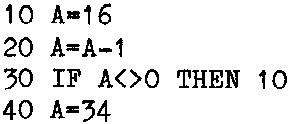

INMC 80 News |
September 1980 – January 1981 · Issue 2 |
| Page 29 of 59 |
|---|
Now having got the program in using the ‘M’ command, go and read up the ‘S’ command. Notice how the register display is presented when using single step. It might help if you stuck a piece of masking tape across the top of the monitor screen, with the registers written in order across it, saves continually refering to the book. Away we go!! Type S 0C80, and provided you did it all right, then a register display will appear on the screen. Whats more, the ‘A’ register will contain 10H and the ‘PC’ will be pointing at the next instruction (0C82H). Hit ‘Enter’ again, and the ‘PC’ will advance one, pointing to the next instruction, and the ‘A’ register will be decremented by 1. Also at this point the flags may have changed (they were in an indeterminate state when we started), now they definitely show the result of the decrement. Hit ‘Enter’ again, and the ‘PC’ will have skipped back to the address of the decrement instruction ready for the next time round. Keep hitting the ‘Enter’ key, watching the ‘A’ register and the flags. When the ‘A’ register goes to zero, notice the flags change, the ‘Z’ flag comes on. Take one more step, and notice nothing happens, but this time the ‘PC’ instead of pointing to the decrement instruction, now points to the next instruction, the load ‘A’ with 22H. Nothing happened because the processor still has to perform the test on the flags. You know they’ve changed, but the processor still has to test them and jump (or not jump as the case may be). One more step, and lo, the ‘A’ register contains 22H. There you are, your first assembler program. It didn’t do much, and it’s only safe to single step the program, as it doesn’t stop when its finished, but you must have learned something. If you didn’t understand what happened, perhaps a Basic analogy will help.
Having manipulated one register and seen the effects. Two things remain to be explained in this episode. The first, a brief explanation of some of the other registers, and secondly, how the processor knows what to do.
The other main registers of the Z80 are the ‘B’, ‘C’, ‘D’, ‘E’, ‘H’ and ‘L’ registers. As mentioned previously these 8 bit registers are also organised so that they may also be loaded as pairs so that each of the 8 bit registers paired together give the following 16 bit registers, ‘BC’, ‘DE’ and ‘HL’. The ‘A’ and ‘F’ registers are also paired together, although because of the special nature of the ‘F’ register, the ‘AF’ pair can not be treated as a single 16 bit register. Presumably there is no ‘G’ register because the name of the other of the pair has already been allotted to the ‘F’ register.
When treated as 8 bit registers, the registers act as temporary storage places for data or can be used as counters. They also have limited arithmetic capability, they may be incremented and decremented, and major changes of status will affect the ‘F’ register just like the ‘A’ register. There are perhaps more 8 bit registers than would be really necessary, (memory locations could be used in place of registers), but as it takes the processor markedly less time to get frequently used data from an internal register, using them speeds things up.
Perhaps more important is the 16 bit capability. Now addresses are 16 bits wide, and the 16 bit register pairs have access to the address bus. The ‘HL’ pair acts rather like the ‘A’ register, in that limited arithmetic can be performed using it as a 16 bit accumulator and the results affect the flags accordingly. This means that addresses can be calculated directly which saves a lot of time and effort. The remaining registers, the ‘SP’, ‘IX’ and ‘IY’, ‘I’ and ‘R’ all perform special functions and we’ll make use of them as we come to them.
Just in case the above set of registers aren’t enough for you, there is also a complete duplicate set of the main registers which may be switched in at will. Phewww !!!
| Page 29 of 59 |
|---|